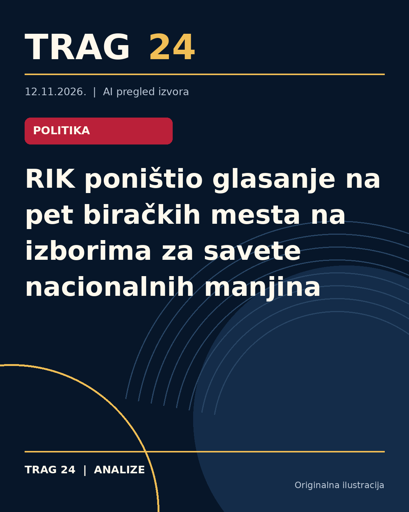

RIK poništio glasanje na pet biračkih mesta na izborima za savete nacionalnih manjina

ŠTA SE DOGODILO
Republička izborna komisija (RIK) usvojila je izveštaj o ukupnim rezultatima izbora za članove 18 nacionalnih saveta nacionalnih manjina održanih 8. novembra 2026. godine. Istovremeno, na pet biračkih mesta poništeno je glasanje ili nije bilo moguće utvrditi rezultate zbog nepravilnosti.
HRONOLOGIJA
Izbori za članove nacionalnih saveta nacionalnih manjina sprovedeni su 8. novembra na 949 biračkih mesta. Nakon pregleda i obrade rezultata, RIK je na sednici doneo odluke o poništavanju glasanja na četiri biračka mesta i o nemogućnosti utvrđivanja rezultata na jednom biračkom mestu. Među ovim biračkim mestima su biračka mesta u opštinama Bujanovac i Subotica, gde je pronađeno više listića u kutijama nego što je bilo evidentiranih glasača ili druge greške u zapisnicima.
ŠTA NAVODE IZVORI
Izvor Kurir ističe da je nepravilnosti bilo, ali ne i da su one dovele do opšte sumnje u regularnost izbora. Blic i Danas detaljno navode konkretna biračka mesta gde je glasanje poništeno ili se rezultati ne mogu utvrditi, kao i razloge za to – kao što su neravnopravan broj glasača i listića. Takođe, potvrđeno je da će na ovim mestima biti ponovljeno glasanje.
ŠTA JE POTVRĐENO
Potvrđeno je da su rezultati glasanja poništeni na biračkim mestima broj 7 i 17 u opštini Bujanovac, kao i na biračkim mestima 10, 31 i 32 u Subotici. Najčešći razlozi su bili viši broj glasačkih listića nego registrovanih birača, kao i greške u zapisniku biračkog odbora na jednom biračkom mestu. Takođe je potvrđeno da će glasanje biti ponovljeno na ovim mestima.
ŠTA NIJE POTVRĐENO
Nije potvrđeno da su nepravilnosti uticale na ukupni ishod izbora niti da su izborne nepravilnosti sistemske ili značajnije po opštu regularnost. Takođe, nema podataka o potencijalnim krivičnim ili disciplinskim merama protiv odgovornih osoba za nepravilnosti.
ŠTA OSTАJE OTVORENO: Ostaje nejasno kada će tačno biti održano ponovljeno glasanje na pomenutim biračkim mestima, kao i da li će uslediti dodatne kontrole ili revizije kako bi se sprečile slične nepravilnosti na budućim izborima za nacionalne savete nacionalnih manjina.
Izvori
- https://www.kurir.rs/vesti/politika/10160729/na-pet-birackih-mesta-ponavljanje-izbora-za-clanove-saveta-nacionalnih-manjina
- https://www.blic.rs/vesti/politika/na-pet-birackih-mesta-ponavljanje-izbora-za-clanove-saveta-nacionalnih-manjina/vryl6bl
- https://www.danas.rs/vesti/politika/rik-ponistio-glasanje-na-cetiri-biracka-mesta-na-izborima-za-clanove-nacionalnih-saveta-nacionalnih-manjina/
Ova analiza je pripremljena uz pomoć veštačke inteligencije na osnovu javno dostupnih izvora. Navodi izvora nisu nužno nezavisno potvrđeni.